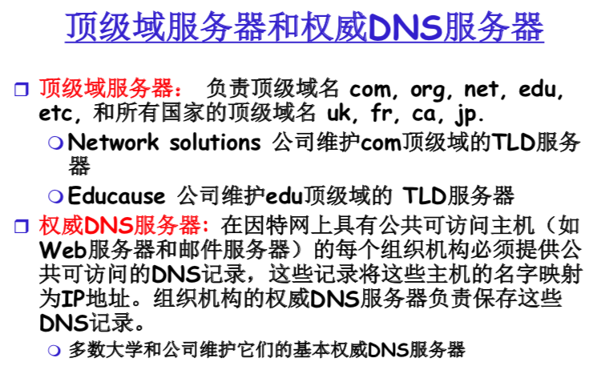

计算机网络
网络与因特网
因特网概述
因特网
具体组成
- 端系统或主机
- 通信链路
- 分组交换机
- 路由器
- 链路层交换机
服务描述
通信基础设施
允许终端系统上运行分布式 应用程序，并彼此交换数据
为分布式应用程序供的通信服务
- 无连接服务
- 面向连接服务
- 不供数据传递时间保证(发送端到接收端)的服务
协议
定义了两个或多个通信实体间所交换报文的格式和次序，以及在报文发送和/或接收或者其他事件方面所采取的行动(响应)
要素
- 语法
- 语义
- 同步
internet标准
IETF:
Internet Engineering Task Force
因特网工程任务组
RFC
Request for comments
请求评论

端系统上的因特网服务
面向连接的服务 TCP
目的：在端系统间传送数据
握手
客户和服务器事先进入戒备状态，为接下来的分组交换做好准备
- 可靠、顺序、字节流传输
- 丢失: 确认和重传
- 流量控制
- 发送者不至于淹没接收者
- 拥塞控制
- 当网络拥塞时发送者降低发送速率
- 不提供时延保证
应用
HTTP , FTP , Telnet, SMTP
无连接服务 UDP
目的：在端系统间传送数据
- 不可靠数据传输
- 无流量控制
- 无拥塞控制
应用
流媒体,视频会议, DNS, Internet电话
网络核心
分组交换
每个端到端的数据流被划分成分组来发送
- 所有分组共享网络资源
- 每个分组使用全部链路带宽
- 资源按需使用
统计复用
- 资源需求总量可以大于可获得资源的总量
- 拥塞: 采用分组队列, 等待使用链路
- 存储转发
- 在1个链路上传输
- 每经过1个链路转发1次
- 转发分组前，要求收到完整分组
分类
数据报网络: TCP/IP
- 分组目的地址决定下一跳
- 会话期间路由可以改变
虚电路网络: X.25,FR,ATM
每个分组有1个标签，标签决定下1跳
连接建立时确定固定的路径, 并且将保持于整个会话期间
路由器必须为每个连接维护状态信息
优点
- 适合大量的突发数据传输
- 资源共享
- 简单, 不需要建立连接
缺点:
- 过渡竞争导致分组延迟与丢失
- 需要可靠数据传输、拥塞控制协议
电路交换
每次会话预留沿其路径(线路)所需的独占资源—电话网
多路复用
分片分配到会话
分片没有被会话使用的情况下，分片空载(不共享)
电路级性能(有保证)
要求呼叫建立—建立一个专门的端到端线路(意味着每个链路上预留一个线路)
分片方式
- 频分FDMA
- 时分TDMA
网络分类
分组时延
原因：分组到达输出链路的速率超过输出链路的容量
分组时延类型
节点处理时延
排队时延
传输时延
- R=链路带宽 (bps)
- L=分组长度 (bits)
- 发送分组比特流的时 间 = L/R
传播时延
- d = 物理链路的长度
- s = 介质的信号传播速度 (~2x10^8^ m/sec)
- 传播延迟=d/s
总的节点延迟：$d{nodal} = d{proc} + d{queue} + d{trans} + d_{prop}$
prop:传播时延、queue:排队时延、trans:传输时延
分组丢失
- 路由器输入链路和输出链路的缓冲区容量有限
- 当分组到达路由器输入链路发现缓冲区已满，则路由器只好丢弃分组
- 当分组在路由器内部要转发到输出链路时发现输出缓冲区队列已满，路由器只好丢弃分组
- 丢失的分组可能被前路由节点、源节点重传，或不重传
- 丢包率或分组丢失率
吞吐量
接收端接收数据的比特速率 (bps)
- 瞬时吞吐量: 某一瞬间的吞吐量
- 平均吞吐量: 一段时间内的吞吐量均值
吞吐量=$min(R_s, R_c)$
协议层次及服务模型
OSI七层模型
| 层号 | 层的名称 | 层的英文名称 | 层的英文缩写 |
|---|---|---|---|
| 7 | 应用层 | Application | A |
| 6 | 表示层 | Presentation | P |
| 5 | 会话层 | Session | S |
| 4 | 运输层 | Transport | T |
| 3 | 网络层 | Network | N |
| 2 | 数据链路层 | Data Link | DL |
| 1 | 物理层 | Physical | PL |
分层的意义
清楚的结构允许我们对大型复杂系统定义其特定部分，探讨其各部分的关系
模块化使得系统的维护、升级简化
弊端
各层可能重复较低层功能
TCP/IP参考模型
五层因特网协议栈
| 应用层 |
|---|
| 传输层 |
| 网络层 |
| 网络接口层(数据链路层) |
| 网络接口层(物理层) |
网际协议栈
应用层 支持网络应用， 报文传送 HTTP,FTP, SMTP,DNS,STTP 运输层 主机进程间数据、报文传送、地址可靠校验 TCP, UDP 网络层 主机间分组传送 IP协议, 路由协议 数据链路层 相邻网络节点间的数据帧传送 PPP, Ethernet 物理层 物理介质上的比特传送 各层发方从上层到下层，收方从下层到上层传递数据
网络边缘
接入网
- 住宅接入网
- 点对点接入
- 不能同时网上冲浪和拨打电话: 不能一直在线
- HFC：混合光纤同轴电缆
- ADSL：非对称数字用户线路
- 机构接入网络(学校,公司)
- 无线接入网络
- 通过基站

物理介质
物理链路:在发送方和接受方间,传播位(bit)信号
导引型媒体
信号在固态介质中有向传播
- 光纤、双绞线和同轴电缆
非导引型媒体
信号在大气空间或外太空 空间自由传播
- 无线电
物理介质
双绞线:两根彼此绝缘、相互缠绕成螺旋状的铜线
缠绕的目的是减少电磁干扰
- 屏蔽双绞线 STP
- 非屏蔽双绞线 UTP
同轴电缆
两根彼此绝缘的同心导体
双向传输
光纤线缆
光纤传导光脉冲, 每个光脉冲代表1位
高速传输
低误码率
无线电磁波
- 地面微波
- 局域无线通道
- 广域无线通道
- 卫星通信
电磁频谱承载信号
双向
传播环境的影响
ISP
第一层:国家/国际级ISP (NAP)
ISP彼此对等，直接互连或通过网络接入点互连
第二层：区域级ISP(向第一层付费)
可以使用专用对等点互连，或使用NAP互连
第三层：本地ISP
最后的接入网络
网络攻击
植入恶意软件
- 病毒
- 蠕虫
- 特洛伊木马
攻击服务器和网络基础设施
- 拒绝服务攻击(DoS)
- 三种类型
- 弱点攻击
- 带宽洪泛
- 连接洪泛
嗅探分组
- 分组嗅探器:记录每个流经的分组拷贝的被动接收机
- 容易受到攻击的网络:无线网络和以太网LAN
伪装
- ip哄骗
修改或删除报文
- 中间人攻击
应用层
应用层协议原理
术语
网页(Web页，或称文档)
每个对象被一个URL(Uniform Resource Locator统一资源定位符)寻址
没有应用程序写在网络核心设备上
应用层体系结构
客户机/服务器体系结构
服务器:
- 总是打开的主机
- 具有固定的、众所周知的IP地址
- 主机群集常被用于创建强大的虚拟服务器
客户机
- 同服务器端通信
- 可以间断的同服务器连接
- 可以拥有动态IP地址
- 客户机相互之间不直接通信
纯P2P体系结构
- 没有总是打开的服务器
- 任意一对主机直接相互通信
- 对等方间歇连接并且可以改变IP地址
优点：自扩展性
缺点：难以管理
客户机/服务器和P2P混合的体系结构
进程通信
进程：运行在端系统上的程序
客户机进程：发起通信的进程
服务器进程：等待联系的进程
- 同一主机上的两个进程通过内部进程通信机制进行通信
- 不同主机上的进程通过交换报文相互通信
- 具有P2P体系结构的应用程序有客户机进程和服务器进程
套接字
进程与计算机网络的接口
进程通过它的套接字在网络上发送和接收报文
- 套接字又叫做应用程序编程接口API
- 用户通过API对运输层的控制仅限于
- 选择传输协议
- 能设定几个参数
进程寻址
主机上的进程标识包括IP地址和端口号
传输服务需求
因特网运输协议供的服务
- TCP
- UDP
应用层的网络应用
Web和HTTP
HTTP概况
超文本传输协议(hypertext transfer protocol)
- 端口号：80
- C/S模式
- 使用TCP(步骤)
- 客户初始化与HTTP服务器80端口的TCP连接(创建套接字)
- HTTP服务器接受来自客户的TCP连接请求, 建立连接
- Browser (HTTP client)和 Web服务器 (HTTP server) 交换HTTP消息(应用层协议消息)包括HTTP请求和响应消息
- 关闭TCP连接
- 无状态协议
- HTTP服务器不维护客户先前的状态信息
HTTP连接
定义往返时间RTT
1个小分组从客户主机到服务器再到客 户主机所花费的时间
非持久HTTP连接
每个TCP连接上只传送一个对象
HTTP/1.0默认
步骤
- HTTP客户初始化1个与HTTP服务器的TCP连接
- HTTP服务器在80端口监听来自HTTP客户的TCP连接请求。收到连接请求, 接受, 建立连接, 通知客户
- HTTP客户发送1个HTTP请求消息(含URL到TCP连接套接字)
- HTTP服务器接收请求消息, 产生1个响应消息
- HTTP服务器结束TCP连接
- HTTP 客户接收消息
- 重复步骤
响应时间
1个RTT用于建立TCP连接
1个RTT用于HTTP请求
Html文件传输时间
total = 2RTT+transmit time
遇到的问题
- 每个对象需要2个RTT
- OS必须为每个TCP连接分配主机资源
- 大量客户的并发TCP连接形成服务器的严重负担
持久HTTP连接
一个TCP连接上可以传送多个对象
HTTP/1.1默认
- 服务器发送响应消息后保持连接
- 同1客户/服务器的后续HTTP消息继续在该连接上传送
分类
- 不带流水线的持久HTTP连接
- 客户先前响应消息收到,才发出新的请求消息
- 每个引用对象经历1个RTT
- 带流水线的持久HTTP连接
- HTTP/1.1默认使用
- 客户遇到1个引用对象就发送请求消息
- 所有引用对象只经历1个RTT
HTTP请求报文
ASCII文本
- POST:输入值在请求报文的实体主体中被上载到服务器
- GET:表单(各字段)输入值被上载,以URL请求行的字段
HTTP响应消息
HTTP 响应的状态码
200 OK
- 请求成功, 所请求信息在响应消息中返回
301 Moved Permanently
- 所请求的对象已永久迁移, 新的URL在本响应消息的(location:)头部指出
- 400 Bad Request
- 该请求不能被服务器解读
- 404 Not Found
- 服务器上不存在所请求文档
- 505 HTTP Version Not Supported
Cookies
- Cookie首部行在 HTTP响应消息中
- Cookie首部行在 HTTP请求消息中
- cookie文件保存在用户主机中并被用户浏览器管理
- cookie也保存在Web站点的后端数据库
作用
- 身份认证
- 虚拟购物车
- 推荐广告
- 用户会话状态
Web缓存
代理服务器
用户配置浏览器: Web 访问经由缓存
- 所有HTTP请求指向缓存
- 对象在缓存中:缓存器返回对象
- 否则缓存器向起始服务器发出请求,接收对象后转发给客户机
优点
- 减少对客户机请求的响应
- 减少内部网络与接入链路上的通信量
- 能从整体上大大降低因特网上的Web流量
FTP
文件传输协议
- 传输文件到远程主机/从远程主机下载文件
- C/S架构
- 端口号：20,21
步骤
文件传输模型
ftp数据连接建立方式
ftp命令
- USER username
- PASS password
- LIST:返回当前远程目录的文件列表
- RETR filename:获取 远程主机当前目录下的1个文件(get)
- STOR filename:存放 1个文件到远程主机当前目录下(put)
ftp应答
- 状态码及其相应短语(同HTTP)
- 331 Username OK,password required
- 125 data connection already open; transfer starting
- 425 Can’t open data connection
- 452 Error writing file

电子邮件
组成成分
- 用户代理
- 邮件服务器
- 简单邮件传送协议和邮件接收协议
SMTP协议
- 客户使用TCP来可靠传输邮件消息到服务器端口号25
- 直接传送: 发送服务器到接收服务器
传输的3个阶段
握手 (问候)
邮件消息的传输
结束
- 命令/应答的交互
- 命令: ASCII文本格式
- 应答: 状态码及其短语
- 邮件消息必须是7-bit ASCII
- 使用持久连接
- crlf .crlf判断邮件结束
邮件消息格式
邮件访问协议
SMTP
递送/存储邮件消息到接收者邮件服务器
邮件访问协议
从服务器获取邮件消息
POP: Post Office Protocol 邮局协议
110端口
身份认证 (代理 <—>服务器)
客户命令
user username
pass password
服务器响应
+OK
-ERR
下载邮件消息
- list: 列出邮件编号
- retr: 按编号取邮件
- dele: 删除
- quit
POP3会话无状态
POP3模式
- Download-and-delete
- Download-and-keep
IMAP: Internet Message Access Protocol
- 143端口
- 更多功能特征
- 允许用户像对待本地邮箱那样操纵远程邮箱的邮件
- 保存所有邮件消息在服务器
- 允许用户在服务器的各文件夹中管理邮件消息
- IMAP跟踪用户状态信息
DNS(Domain Name System)
DNS提供的功能
- 53port
- 主机名到IP地址的转换
- 主机别名
- 一个主机可以有一个规范主机名和多个主机别名
- 邮件服务器别名
- 负载分配
- DNS实现冗余服务器:一 个IP地址集合可以对应于同一个规范主机名
DNS
采用分布式数据库
不采用集中式DNS的原因
- 单点故障
- 巨大访问量
- 远距离集中式数据库
- 维护
- 不可扩展
13个DNS根服务器
- 10个美国
- 1个英国
- 1个瑞典
- 1个日本
顶级域名服务器：TLD：top level domain

DNS工作机制
DNS查询方式
递归查询
迭代查询
DNS缓存
一旦名字服务器获得DNS映射, 它将缓存该映射到局部内存
- 服务器在一定时间后将丢弃缓存的信息
- 本地DNS服务器可以缓存TLD服务器的IP地址
- 因此根DNS服务器不会被经常访问
权威DNS服务器记录更新:IETF动态更新/通报机制
DNS记录

DNS协议
查询报文与应答报文
查询报文
应答报文
在DNS数据库中插入记录
如果你想在注册登记机构注册你的域名network.com，则
- 需要供你自己的基本权威DNS服务器和辅助权威DNS服 务器的名字和IP地址
- 该注册登记机构将下列两条资源记录插入注册机构的DNS 系统中:
- (network.com, dns1.network.com, NS)
- (dns1.network.com, 212.212.212.1, A)
- 如果你想建立一个网站，则可以将网址www.network.com以 类型A的方式记录到你的权威DNS服务器dns1.network.com中
- 如果你想建一个邮件服务器，则可以将mail.network.com以 类型MX的方式记录到你的权威DNS服务器 dns1.network.com中
P2P
P2P集中式目录
问题
- 单点故障
- 性能瓶颈
- 侵犯版权
Gnutella协议
- 全分布
- 没有集中式服务器
- 公共域协议
- 许多Gnutella客户机实现 Gnutella协议
- 查询洪泛
加入对等方
- 加入对等方X必须发现在Gnutella网络中的其他对等方:使用对等方列表
- X试图与该列表上的对等方建立一条TCP连接，直到与Y 创建一条连接
- X向Y发送一个Ping报文;Y转发该Ping报文
- 所有的对等方接收Ping报文并响应一个Pong报文
- X接收到许多Pong报文。然后能同某些其他对等方建立 TCP连接
对等方离开
主动离开
离开节点的所有对等方都会刷新自身的激活对等方列表,并开始与列表中的新的对等方建立连接
断网
发送信息的时候对等方没有响应,则表明对等方离开,节点刷新自身的激活对等方列表,并开始与列表中的 新的对等方建立连接
KaZaA协议
- 对等方成为组长或被指派给一个组长
- 对等方和组长之间建立 TCP连接
- 组长之间建立TCP连接
- 组长维护它的子对等方共享的内容
- 每个文件有文件的散列码标识
- 客户机送向组长发送关键词的查询
- 组长响应匹配
- 逐项匹配:元数据，散列值，IP地址
- 如果组长转发查询给其他组长则其他组长响应匹配
- 客户端选择要下载的文件
- 请求排队:限制对等方并行上载数量，新的请求进行排队
- 激励优先权:根据不同的上载下载比例,优先服务贡献大者
- 并行下载:将一个文件分成若干段，从多个对等方并行下载
套接字编程
运输层
运输层
为两个实体进程提供逻辑通信
网络层：实体间的逻辑通信
运输层协议运行在端系统
- 发送方:将应用程序报文分成数据段传递给网络层
- 接受方:将数据段重新组装成报文传递到应用层
运输层协议
- 可靠按序递交(TCP)
- 流量控制
- 拥塞控制
- 连接建立
- 不可靠的无序传递(UDP)
- 不提供
- 时延保证
- 带宽保证
多路复用多路分解
多路复用
在发送主机从多个套接字收集数据, 用首部封装数据，然后将报文段传递到网络层在发送主机从多个套接字收集数据, 用首部封装数据，然后将报文段传递到网络层
多路分解
在接收主机将接收到的数据段传递到正确的套接字
工作方式
- 主机接收IP数据报
- 每个数据报有源IP地址，目的IP地址
- 每个数据报搬运一个数据段
- 每个数据段有源和目的端口号
- 主机用IP地址和端口号指明数据段属于哪个合适的套接字
面向连接的多路分解
- TCP套接字由4部分指定和表示，服务器支持多个同时的TCP套接字
- 源IP地址(S-IP)
- 源端口号(SP)
- 目的IP地址(D-IP)
- 目的端口号(DP)
- Web服务器对每个连接的客户都有不同的套接字
- 非持久HTTP将对每个请求有一个不同的套接字
无连接多路分解
- UDP套接字由2个因素指定
- 目的IP地址(D-IP)
- 目的端口号(DP)
- 因此具有不同的源IP地址且/或源端口号，但具有相同的目的IP地址和目的端口号的IP数据报指向同样的套接字
- UDP套接字由2部分表示
- 源端口号(SP)
- 目的端口号(DP)
- 请求报文段中提供返回地址(包括IP地址和端口号)
无连接传输UDP
UDP用户数据报协议
- 不可靠数据传输
- 数据段可能丢失
- 无序提交
- 可能会传递失序的报文段到应用程序
- 面向报文(有多大发多大，有多大收多大)
- 发送方UDP对应用程序交下来的报文，在添加首部后就向下交付 IP 层。UDP 对应用层交下来的报文，既不合并， 也不拆分，而是保留这些报文的边界
- 接收方UDP对IP层交上来的UDP用户数据报，在去除首部后就原封不动地交付上层的应用进程，一次交付一个完整的报文
- 应用程序必须选择合适大小的报文
- 无流量控制
- 无拥塞控制
- 无连接
- 在UDP接收者发送者之间没有握手
- 每个UDP数据段的处理独立于其他数据段
UDP数据报
- 首部
- 源端口(SP) 2bytes
- 目的端口(DP) 2bytes
- 报文长度 2bytes
- 检验和 2bytes
- 数据
UPD协议的优点(小、简单、快)
- 无连接
- 减少时延
- 简单，无需建立连接
- 很小的数据段首部(8 bytes)
- 没有拥塞控制
- UDP能够用想象的快的速度传递
- 适合多媒体通信的要求
- 支持一对一、一对多、多对一和多对多的交互通信
UDP校验和
在计算检验和时，临时把“伪首部”和 UDP 用户数据报连接在一起
目的：对传输的数据进行差错检测
发送方
- 将数据段看成16bit的整数序列
- 计算校验和
- 送者将校验和值放入UDP的校验和域
接收方
- 计算接收到数据段的校验和
- 检查计算的校验和是否等于校验和域中的值
- 是，没有校验错误，提交数据
- 否，有校验错误，进行错误处理
计算方法
- 按反码的加法进行和运算，循环进位
- 结果取反为校验和
可靠数据传输
可靠数据传输服务
停等协议：发送方发送一个报文，然后等待接受方的响应
可能用到的响应
2
3
4
5
6
7
8
9
10rdt_send() //发送数据
rdt_rcv() //接收数据
make_pkt() //数据打包
udt_send() //不可靠发送
extract() //取出数据
deliver_data() //传输数据
corrupt() //数据乱序
notcorrupt()//数据有序
isACK() //接收无误
isNAK() //接收有错Rdt1.0：完全可靠信道上的可靠数据传输
在完美可靠的信道上
没有bit错误
没有分组丢失
- 发送方发送数据到下层信道
- 接收方从下层信道接收数据
Rdt2.0：具有bit错误的信道
下层信道可能使发送报文Bit受损(失序、死锁)
发送报文引入校验和
接收方判断接收报文的校验和
发送ACK或者NAK(停等协议)
发送方收到NAK重传上一个报文
- ACK: 接收方明确告诉发送方，分组接收正确
- NAK: 接收方明确告诉发送方，分组接收错误
致命错误
- ACK/NAK出错
- 发送方并不知道接收方发生了什么
- 接收方不能判定接收的报文是重复的还是新报文
Rdt2.1
ACK/NAK bit错(失序、死锁)
发送报文引入0、1序号
ACK/NAK引入校验
Rdt2.2
ACKs引入0，1
不需要NAK
发送方收到重复ACK将导致和NAK一样的处理
Rdt3.0
丢包(失序、死锁)
发送方对每个报文启动超时重传机制
GBN
0、1效率太低
发送端滑动窗口(大小N)
接收端ACK期望接收的序号i
丢弃失序的报文
发送端发i+1,i+2,…i+N报
GS
N重传损失太大
接收端滑动窗口(大小N)
接收端缓冲接受的失序报文
接收端对失序报文ACK
发送端对窗口内报文ACK做标记

TCP
TCP协议
全双工数据:
同一个连接上的双向数 据流
MSS:最大报文段长
- 面向连接:
- 在数据交换前握手,初始化发送方和接收方的状态
- 流量控制:
- 发送方不会淹没接收方
TCP可靠数据传输
- TCP在IP不可靠服务之上创建rdt服务
- 流水线技术处理报文段
- 累积确认
- TCP使用单个重发定时器
- 触发重发:
- 超时事件
- 重复确认
网络层
网络层
- 将分组从发送方主机传送到接收方主机
- 发送方将数据段封装成分组
- 接收方将分组解封装后将数据段递交给传输层
- 网络层协议存在于每台主机和路由器上
- 路由器检查所有经过它的IP分组的分组头
网络层功能
- 转发 forwarding
- 将分组移动到合适的链路层接口
- 选路 routing
- 决定分组从源到端的路径
- 建立连接
网络层服务模型
- 单个数据
- 确保交付
- 具有时延上界
- 分组的流
- 有序的分组提交
- 确保最小带宽
- 确保最大时延抖动
- 安全性服务
- 现在的因特网网络层并没有供上述服务
| 网路体系结构 | 服务模型 | 带宽保证 | 无丢包保证 | 排序 | 定时 | 拥塞指示 |
|---|---|---|---|---|---|---|
| Internet | 尽力而为 | 无 | 无 | 任何顺序 | 不维持 | 无 |
| ATM | CBR | 恒定速率 | 是 | 有序 | 维持 | 无拥塞 |
| ATM | ABR | 保证最小速率 | 无 | 有序 | 不维持 | 提供拥塞指示 |
虚电路网络和数据报网络
虚电路(VC)
- 数据传输前建立虚电路，传输完毕后拆除虚电路
- 每个分组携带VC标识(并非目的地址)
- 在源-目的路径上每个路由器要维护每个连结的状态信息
- 链路、路由器资源(带宽、缓冲区)可能分配给VC
vc的组成
- 路径
- VC号
- 转发表项
本博客所有文章除特别声明外，均采用 CC BY-SA 4.0 协议 ，转载请注明出处！